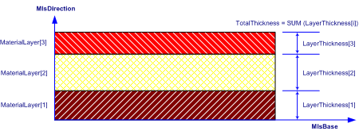

| Gruppe von Materialschichten |
 | Material Layer Set |
 | Ensemble de couches de matériau homogène |
| Item | SPF | XML | Change | Description | IFC2x3 to IFC4 |
|---|---|---|---|---|
| IfcMaterialLayerSet | ||||
| Description | ADDED |
The IfcMaterialLayerSet is a designation by which materials of an element constructed of a number of material layers is known and through which the relative positioning of individual layers can be expressed.
The Material Layer Set Base (MlsBase) describes the imaginary axis along which the material layers are positioned.
\\\\\\\\\\\\\\* In case of assigning the IfcMaterialLayerSet directly to an element or element type, the individual layers are stacked according to their position within the list of MaterialLayers without providing information on how to spatially relate the material layer information to the shape representation of the element or element type. \\\\\\\\\\\\\\* In case of assigning the IfcMaterialLayerSet through an IfcMaterialLayerSetUsage to an element, the MlsBase is positioned along the reference axis or reference plane of the element. An offset from the reference axis or plane to MlsBase is supported by IfcMaterialLayerSetUsage which combines layers and an offset. Offsets from element edges are supported by the subtype IfcMaterialLayerWithOffsets. The positive LayerSetDirection (MlsDirection) describes the direction by which the individual material layers are stacked. The IfcMaterialLayer's are stacked with no gap. Gaps within a material layer set are expressed as layers by themselves.
EXAMPLE A cavity brick wall would be modeled as IfcMaterialLayerSet consisting of three IfcMaterialLayer's: brick, air cavity and brick. The air gap is identified by the IsVentilated flag at IfcMaterialLayer.
Attribute use definition
As shown in Figure 15, each IfcMaterialLayerSet implicitly defines a material layer set base line (MlsBase), to which the start of the first IfcMaterialLayer is aligned. The total thickness of a layer set is calculated from the individual layer thicknesses, the first layer starting from the MlsBase and following layers being placed on top of the previous (no gaps or overlaps).
|  |
Figure 15 — Material layer set |
| # | Attribute | Type | Cardinality | Description | C |
|---|---|---|---|---|---|
| 1 | MaterialLayers | IfcMaterialLayer | L[1:?] | Identification of the IfcMaterialLayer’s from which the IfcMaterialLayerSet is composed. | X |
| 2 | LayerSetName | - | This attribute is out of scope for this model view definition and shall not be set. | ||
| 3 | Description | - | This attribute is out of scope for this model view definition and shall not be set. | ||
| TotalThickness :=IfcMlsTotalThickness(SELF) | IfcLengthMeasure | Total thickness of the material layer set is derived from the function IfcMlsTotalThickness. | X |
| # | Attribute | Type | Cardinality | Description | C |
|---|---|---|---|---|---|
| IfcMaterialDefinition | |||||
| AssociatedTo | IfcRelAssociatesMaterial @RelatingMaterial | S[0:?] | Use of the IfcMaterialDefinition subtypes within the material association of an element occurrence or element type. The association is established by the IfcRelAssociatesMaterial relationship. | X | |
| HasProperties | IfcMaterialProperties @Material | S[0:?] | Material properties assigned to instances of subtypes of IfcMaterialDefinition. | X | |
| IfcMaterialLayerSet | |||||
| 1 | MaterialLayers | IfcMaterialLayer | L[1:?] | Identification of the IfcMaterialLayer’s from which the IfcMaterialLayerSet is composed. | X |
| 2 | LayerSetName | - | This attribute is out of scope for this model view definition and shall not be set. | ||
| 3 | Description | - | This attribute is out of scope for this model view definition and shall not be set. | ||
| TotalThickness :=IfcMlsTotalThickness(SELF) | IfcLengthMeasure | Total thickness of the material layer set is derived from the function IfcMlsTotalThickness. | X | ||
<xs:element name="IfcMaterialLayerSet" type="ifc:IfcMaterialLayerSet" substitutionGroup="ifc:IfcMaterialDefinition" nillable="true"/>
<xs:complexType name="IfcMaterialLayerSet">
<xs:complexContent>
<xs:extension base="ifc:IfcMaterialDefinition">
<xs:sequence>
<xs:element name="MaterialLayers">
<xs:complexType>
<xs:sequence>
<xs:element ref="ifc:IfcMaterialLayer" maxOccurs="unbounded"/>
</xs:sequence>
<xs:attribute ref="ifc:itemType" fixed="ifc:IfcMaterialLayer"/>
<xs:attribute ref="ifc:cType" fixed="list"/>
<xs:attribute ref="ifc:arraySize" use="optional"/>
</xs:complexType>
</xs:element>
</xs:sequence>
</xs:extension>
</xs:complexContent>
</xs:complexType>
ENTITY IfcMaterialLayerSet
SUBTYPE OF (IfcMaterialDefinition);
MaterialLayers : LIST [1:?] OF IfcMaterialLayer;
LayerSetName : OPTIONAL IfcStrippedOptional;
Description : OPTIONAL IfcStrippedOptional;
DERIVE
TotalThickness : IfcLengthMeasure := IfcMlsTotalThickness(SELF);
END_ENTITY;
public class IfcMaterialLayerSet extends IfcMaterialDefinition
{
private IfcMaterialLayer[] MaterialLayers;
private string LayerSetName;
private string Description;
private double TotalThickness;
}
 References: IfcMaterialLayer
References: IfcMaterialLayer
 EXPRESS-G diagram
EXPRESS-G diagram Link to this page
Link to this page